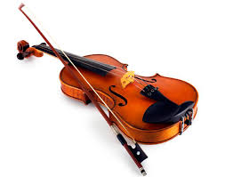

Скрипка — струнно-смичковий музичний інструмент із чотирма струнами , налаштованими по квінтах : G м D 1 A 1 E 2 . Найвищий реєстровий різновид скрипкового сімейства, нижче якого розташовуються альт , віолончель і контрабас . Разом із фортепіано скрипка є головним інструментом академічної ( класичної ) музики. З середини XVIII століття вона становить основу симфонічного оркестру та струнного квартету . Як народний інструмент продовжує побутувати серед поляків, білорусів, євреїв , північно-західних росіян, чехів, латишів, шведів, норвежців, естонців, угорців, румунів, молдаван, циган і інших циган. У США застосовується в музиці кантрі [ 1 ] , в Індії - у класичній музиці традиції карнатака .
